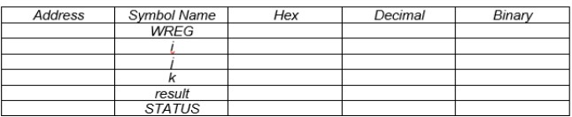
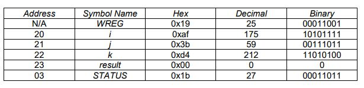

To code a program using Assembler and to observe how data flows through the WREG to the file registers using MPLAB SIM
Procedure:
Keep in mind the following program below:
Use asmTemplate.asm as a "template" for the new program
Use an appropriate amount of programmer's comments
Use the "Step Into" function in MPLAB SIM (remember to Select Debugger>Select Tool>1 MPLAB SIM) to observe how data moves through the various registers. Ensure you have the following symbols in your Watch Window:
WREG
Any file registers (i.e. i, j, k, result)
STATUS Register
asmANDWF:
Write a program called asmANDWF that will AND the contents of the 3 registers and place the result in a separate file register, named result
i=0xaf j=0x3b k=0xd4
Based on what you observed (in the Watch window) from simulating the program, fill out the chart below:

Conclusion:
Why is the address for i, 020 (remember this is 0x20 – i.e. hex20)?
What type of register is the STATUS register?
Reset your program and step through it again, paying close attention to the first 3 bits of the "STATUS Register" in your "Watch" Window. When does a change occur?
Explain why the Z bit has been affected?
PDF Version:
Tutorial 4 Answers Below:

Why is the address for i, 020 (remember this is 0x20 – i.e. hex20)?
The address is 020 because the first available GPR is located at 0x20.
What type of register is the STATUS register?
It is a hardware register that explicitly shows the commands the processer is executing.
It contains the flags that will indicate the changes the current command is making.
Reset your program and step through it again, paying close attention to the first 3
bits of the "STATUS Register" in your "Watch" Window. When does a change
occur?
As the 4th low order bit is used, the status register changes its value, 00011011 to
00011001.
When the answer is 0, the zero bit gives 1. The zero bit is unaffected while no logic or
arithmetic functions are executed.
4. Explain why the Z bit has been affected?
The Z bit is affected when the result of the logic becomes 0. The Z bit is set when the
result is 0, otherwise it is 0.